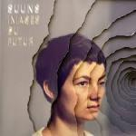
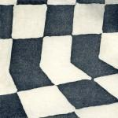
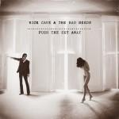

Music Reviews
-
Autre Ne Veut Anxiety
Oversinging R'n'B white boy Autre Ne Veut does a surprisingly convincing job of going embarrassingly OTT, stepping up his production values in the process.
Stephen Wragg reviews... -

Suuns Images Du Futur
Suuns' sophomore effort offers clarity in its ambiguity, but does that translate to a powerful record?
Matt Bevington reviews... -
The Men New Moon
Brooklyn's most consistently original plagiarists throw a curveball with this one. It's the new beginning that the name promises, but with the familiar sky all around it.
Forrest Cardamenis gazes... -
Tegan and Sara Heartthrob
Tegan and Sara's latest album finds them moving in a new direction, specifically a synth pop one. While the duo's songwriting sensibilities remain intact, the sometimes repetitive electronica holds them back from making a truly great record.
Joe Marvilli's thinks the duo can get a little closer to success... -

Sally Shapiro Somewhere Else
The chronically shy Swedish songwriter re-emerges after a four year wait, subtly detaching herself from her Italo-disco informed body of work.
Juan Edgardo Rodríguez is a starman... -

Eat Skull III
Softening their sound for a more mysterious and dreamy approach, garage rockers Eat Skull bridge the gap between lo-fi rock and experimentation with impressive results.
Peter Quinton finally gets to talk about GBV in his review of the new Eat Skull album... -

Ducktails Flower Lane
Ducktails is back again with their first proper studio effort. Is it as "cool" as some would have you believe?
Andrew Ciraulo never planned on being cool in the first place... -

Nick Cave and the Bad Seeds Push The Sky Away
The inimitable Nick Cave is back with another great album. How couldn't he be?
Forrest Cardamenis pushes... -
The Embassy Sweet Sensation
The influential Swedish duo have re-emerged from the wilderness to find the stage theirs for the taking. But is Sweet Sensation up to the task?
David Coleman says "nej"... -

Baptists Bushcraft
As annihilative a sound as one’s able to generate with a guitar, bass, drums and mic, d-beat metal act Baptists aspire to crush with their first full-length album, Bushcraft.
Sean Caldwell reviews...